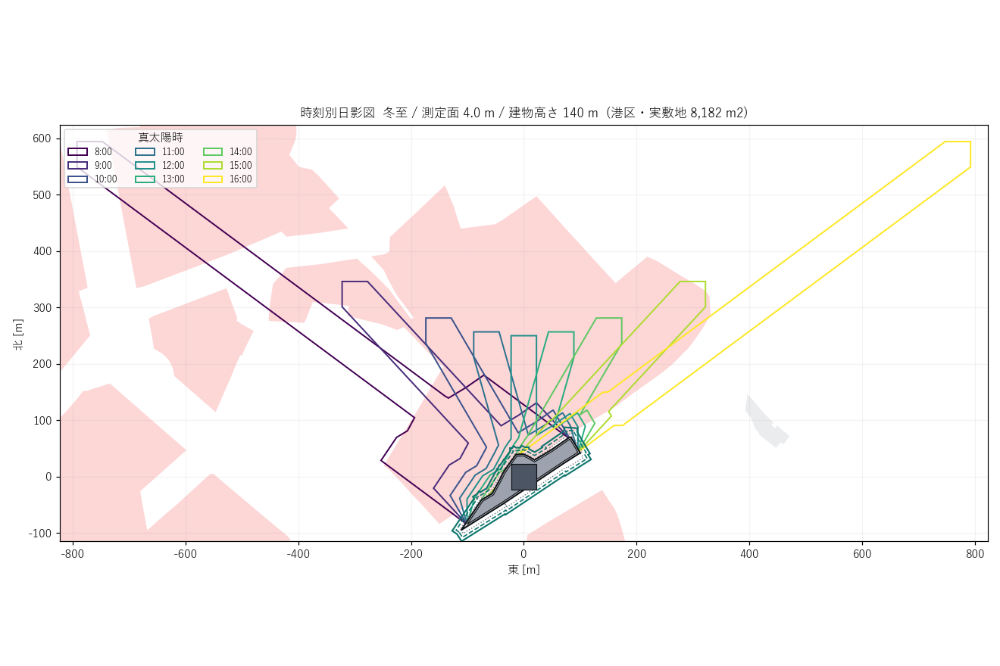
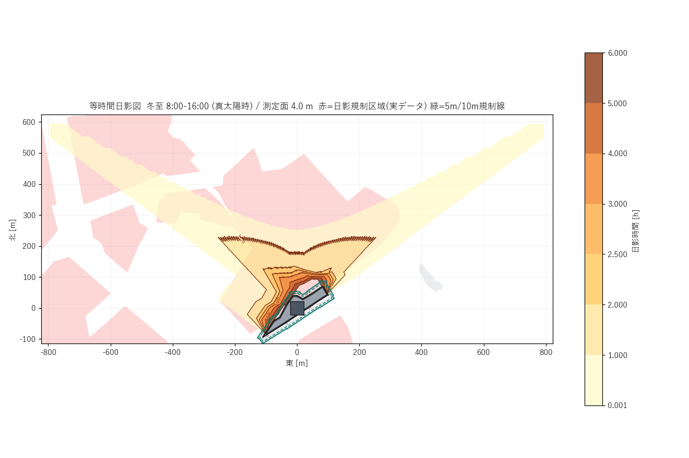
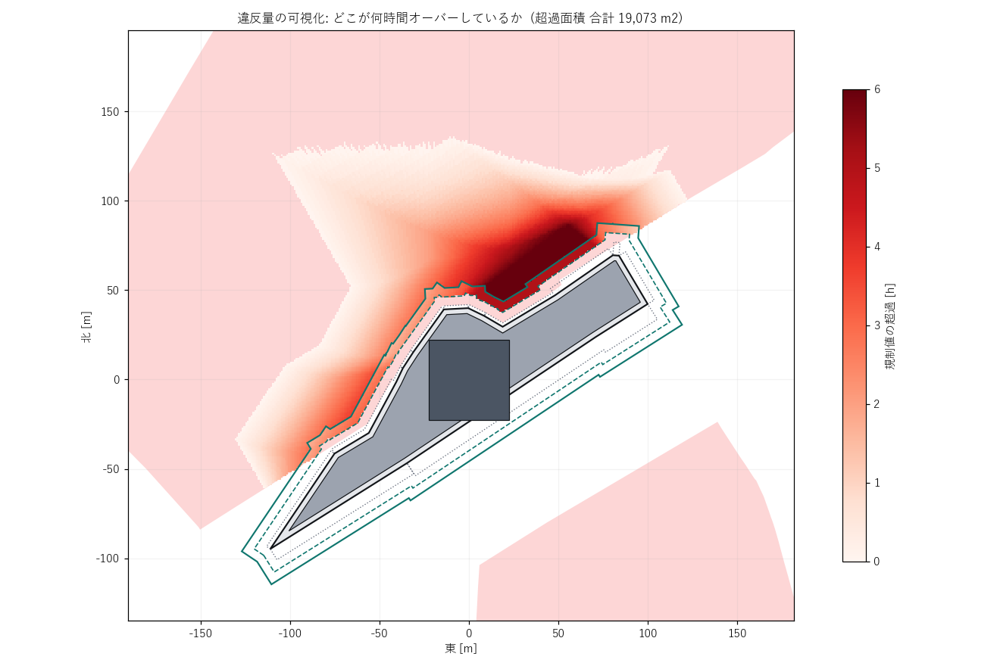
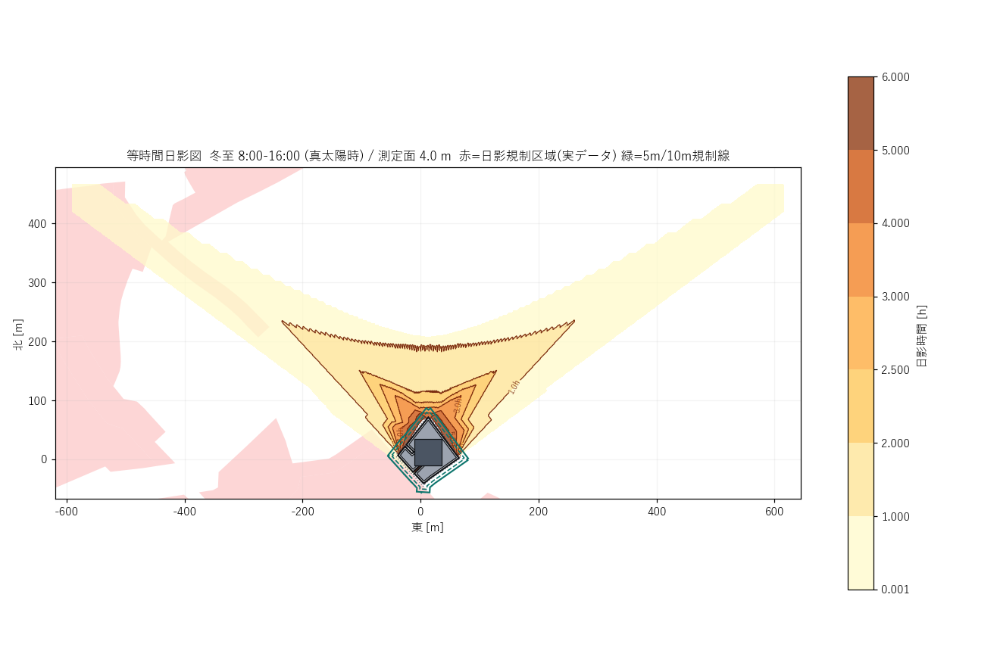

結論（3行）
①
実証できた 「日影チェック」ボタンは、実敷地で通し実行できる
港区の実街区・実規制値 で、区域トレース → みなし敷地境界線の自動生成 → 冬至8〜16時の日影 → 面での判定 → 日影図の出力まで通した。1敷地あたり28.3秒（うち計算9.2秒） 。判定は「線の上だけ見る」ではなく法文どおり範囲（面） で行い、規制値は東京都の公開シェープから機械的に読んでいる。捏造値はゼロ。
②
先に工事が要る 規制値は都心13区の33%しか自動で埋まらない
東京都の「日影規制」シェープで値が確定するのは13区の面積の 7.8% 。商業・工業・工専（規制対象になり得ない）を足しても33.1% 止まり。残る66.9%は東京都日影条例「別表第一」の対応表を実装しないと値が出ない 。ここがトライアル前の必須工事で、日影計算そのものより重い。
③
載せない 「守れるボリュームへの自動フィードバック」は成立しない
実証した敷地（容積1100%・延床9.2万m²）で、逆算で求めた「日影規制を素で満たせる最大ボリュームは高さ8.2m＝容積80%相当」 。桁が違う。都心の大規模再開発は素の日影規制では最初から成立していない のが実態で、実務は法56条の2第1項ただし書の許可や制度側の適用除外で通している。ツールが出すべきは「直した案」ではなく「どれだけ超えているか・何が効くか・どの緩和ルートが要るか」 。
前編からの主な訂正
1. 前編のプロトタイプに東西反転のバグがあった。 太陽方位から影の向きを出す式の符号が逆で、午前の影が東に、午後の影が西に伸びていた （正しくは午前=西、午後=東）。前編のモデルが左右対称の箱だったため数値には出ず、見逃していた。今回カーネルを作り直し、独立検証で発見・是正した。
2. 「終日日影」が 8.08時間になっていた。 5分刻み97サンプルを単純加算すると両端が二重に入る。中点則（両端を半分の重み）に直し、終日日影＝ちょうど8.00時間 になることを確認した。Codexレビューで指摘された「端点の偏り」がまさにこれだった。
3. 前編の速度実測値（等時間日影図0.61秒）は取り下げる。 今回の実装（1m格子・117万セル）では6.40秒 。前編は判定に使えない粗い条件での値だった。それでも1敷地30秒以内なので結論は変わらない。
1. 今回やったこと（前編との差分）
前編は「できるか」の見積もりだった。今回はトライアルに載せる前提で、実物を動かして確かめた 。site-trace-mvp のコードには一切触れていない（別作業と並走のため読み取り専用で扱った）。作ったものは全部スタンドアロンのプロトタイプ。
L0：計算コアを作り直し、独立検証をつけた
前編のプロトは検算が無かった。今回は解析解・独立実装との突き合わせを自動テスト化（全項目PASS ）。バグを2件発見。
E2E：実敷地1件を通しで回した
港区の実街区（8,181.6 m²・商業地域）で、実規制値・実道路データ を使い、判定と日影図出力まで。
カバレッジ：都心13区で規制値がどこまで自動で埋まるか実測した
用途地域レイヤ2,759件 × 日影規制シェープ601件の面積交差を全件計算。
スイープ：パラメータを振って「効く変数」を実測した
基壇高さ／北側後退／タワー高さ／床一定条件、および逆算（二分探索）。1案1.8秒 。
条文：判定フローに落とすため、根拠を原文で再確認した
法56条の2（第1項ただし書・第4項・第5項）、令135条の12、令135条の13、法59条4項、法60条の2第5項・第6項を e-Gov 法令API の原文で確認。
2. L0：計算コアの答え合わせ
前編の反省は「速さは測ったが、正しさを測っていない」だった。Codexレビューでも「厳密解と呼ぶな」「区域全体で見ろ」と指摘された。今回はそこから直した。
2-1. 何を検証したか
建物は Phase3 と同じ「2D環（平面ポリゴン）＋高さ」の階段状プリズム 。その影は、ポリゴンと線分のミンコフスキー和 （2つの図形を足し合わせた図形）で求まる。これが本当に正しいかを、3通りで確かめた。
■ L0 検証結果（全項目 PASS）
=== 1) 太陽位置 ===
[PASS] 南中高度 = 90-lat-23.45 h=30.8700 期待=30.8700
[PASS] 南中方位 = 0 A=0.000000
[PASS] 8時と16時が対称 8時 h=8.076 A=-53.365 / 16時 h=8.076 A=+53.365
=== 2) 影の向き ===
[PASS] 午前(8時)の影は西へ伸びる (dx,dy)=(-565.5,420.5)
[PASS] 南中の影は真北へ (dx,dy)=( 0.0,167.3)
[PASS] 午後(16時)の影は東へ伸びる (dx,dy)=(+565.5,420.5)
=== 3) ミンコフスキー和 vs 密サンプルunion（独立実装）===
凸(矩形) 密サンプル ⊂ 厳密解 はみ出し 0.00e+00 m2
相対差 n=500:2.53e-03 -> n=8000:1.58e-04（16倍で16.0倍改善＝1/n収束）
凹(L形) 密サンプル ⊂ 厳密解 はみ出し 0.00e+00 m2
相対差 n=500:1.74e-03 -> n=8000:1.09e-04（16.0倍）
穴あき(ドーナツ) 密サンプル ⊂ 厳密解 はみ出し 0.00e+00 m2
相対差 n=500:9.66e-04 -> n=8000:6.03e-05（16.0倍）
浮遊(z 30-60m) 密サンプル ⊂ 厳密解 はみ出し 0.00e+00 m2
相対差 n=500:8.48e-04 -> n=8000:5.30e-05（16.0倍）
=== 4) 解析解との比較（南中・箱 50x40m・H=100m・測定面4m）===
[PASS] 影面積 = WD + W*L 計算 10,029.75 m2 / 解析 10,029.75 m2（相対誤差 <1e-9）
=== 5) 測定面より低いプリズム ===
[PASS] z_top < z_plane -> 影なし
[PASS] 下端が測定面でクリップされる（浮いたボリュームの誤判定なし）
読み方
3) がいちばん重要。 「建物を細かく刻んで平行移動したものを全部足す」という素朴で確実な独立実装と比べた。素朴版は刻みの隙間ぶん必ず小さくなる はずで、実際に はみ出しゼロ（＝素朴版は厳密解の部分集合） 、かつ刻みを16倍細かくすると差が16分の1になる（1/n収束） 。これは厳密解が正しい極限であることの証拠になる。凹形・穴あき・浮いたボリュームでも同じ。
ただし「厳密」なのは限定つき。 入力された階段状プリズムに対する幾何学的な厳密解 であって、①時間の積分は離散化している②実建物の斜面を階段近似している場合はその近似誤差が残る③浮動小数点の精度は別問題。前編の「厳密」という言い方はこの限定を付けて使う。
2-2. 見つけたバグ2件（前編プロトの誤り）
① 東西反転
太陽方位 A（南=0・西が正）から影の方向を出す式が (-sinA, +cosA) になっていた。正しくは (+sinA, +cosA)。午前と午後が入れ替わっていた。
前編のモデルが左右対称の箱だったため、数値（最大日影時間・影長）はすべて正しく出ていた。実敷地のような非対称形状で初めて効く種類のバグ。対称形だけでテストすると通ってしまう という教訓。
② 端点の二重計上
8:00〜16:00 を5分刻み97サンプルで単純加算すると、終日日影の点が 97×5分＝8.083時間 になる。両端を半分の重みにする（中点則）で 8.000時間 に是正。
是正の効果は実測で出た。ラスタ値と厳密値（1分刻み＋二分法で秒まで詰めた値）の差が最大4.9分 → 最大2.4分 に半減。
3. E2E実証：実敷地を通しで回す
3-1. 使ったデータ（すべて実データ）
敷地
site-trace-mvp data/blocks.geojson の実街区 id=133（国土地理院データ由来の街区ポリゴン）。港区・北緯35.665171 / 東経139.735218・8,181.6 m²・16頂点 。
なぜ築地・豊島でないか：ツールの街区／周辺建物データは現時点で港区中心部（緯度35.65-35.69・経度139.735-139.775）しか生成されていない（13区展開は用途地域など規制レイヤのみ）。実データで通すことを優先し、港区の実街区を使った 。
用途地域
site-trace-mvp data/youto.geojson（国土数値情報 A29）→ 商業地域 ＝日影規制の対象区域になり得ない地域。越境日影のケース
規制値
東京都都市整備局「日影規制」シェープ（東京都オープンデータカタログ・CC BY 4.0）。敷地から1.5km以内に43ポリゴン 。最寄りは敷地から1.6m の 別表第三 コード13 ＝ 3時間／2時間・測定面4m 。
道路
site-trace-mvp data/roadedges.geojson（道路縁）263本。幅員は静的属性が存在しないため、index.html の analyzeEdges と同じレイキャスト方式 （辺の外向き法線に沿って5点サンプル→中央値）で実測した。
3-2. みなし敷地境界線の自動生成（令135条の12第3項一号）
日影規制の5m線・10m線は、実際の敷地境界線ではなく「みなし境界線」から測る 。条文（原文確認済み）はこう定めている。
令135条の12第3項一号（原文）
建築物の敷地が道路、水面、線路敷その他これらに類するものに接する場合においては、当該道路、水面、線路敷その他これらに類するものに接する敷地境界線は、当該道路、水面、線路敷その他これらに類するものの幅の二分の一だけ外側 にあるものとみなす。ただし、当該道路、水面、線路敷その他これらに類するものの幅が十メートルを超えるとき は、当該道路、水面、線路敷その他これらに類するものの反対側の境界線から当該敷地の側に水平距離五メートルの線 を敷地境界線とみなす。
つまり 幅員W≦10m なら W/2 だけ外へ、W>10m なら (W−5) だけ外へ 。これを16辺すべてに機械適用した結果が下記。道路幅員さえ測れれば完全に自動化できる ことが確認できた。
■ 辺ごとの実測幅員 → みなし境界線のオフセット量
辺 0 長さ 29.4m 幅員 3.8 m -> 外側へ 1.9 m 辺 8 長さ 34.4m 幅員 15.1 m -> 外側へ 10.1 m
辺 1 長さ 10.7m 幅員 3.5 m -> 外側へ 1.8 m 辺 9 長さ 31.4m 幅員 8.5 m -> 外側へ 4.2 m
辺 2 長さ 8.5m 幅員 3.5 m -> 外側へ 1.8 m 辺10 長さ 3.4m 幅員 12.3 m -> 外側へ 7.3 m
辺 3 長さ 32.5m 幅員 6.2 m -> 外側へ 3.1 m 辺11 長さ 39.4m 幅員 9.2 m -> 外側へ 4.6 m
辺 4 長さ 22.4m 幅員 6.0 m -> 外側へ 3.0 m 辺12 長さ 34.1m 幅員 3.8 m -> 外側へ 1.9 m
辺 5 長さ 64.3m 幅員 5.0 m -> 外側へ 2.5 m 辺13 長さ 12.0m 幅員 3.8 m -> 外側へ 1.9 m
辺 6 長さ 90.3m 幅員 12.1 m -> 外側へ 7.1 m 辺14 長さ 10.0m 幅員 3.9 m -> 外側へ 1.9 m
辺 7 長さ 127.0m 幅員 13.5 m -> 外側へ 8.5 m 辺15 長さ 13.6m 幅員 3.9 m -> 外側へ 2.0 m
実敷地 8,181.6 m2 -> みなし敷地 11,128.6 m2（+36%）
ここは効く
みなし境界線を入れると規制線が敷地から最大10m外へ動く 。5m線・10m線はさらにその外なので、敷地境界から最大20m外まで規制の起点がずれる 。これを無視すると判定が厳しすぎる側に大きく外れる。Phase3 は既に辺ごとの幅員を持っている ので、この緩和は追加データなしで実装できる。
3-3. ボリューム（Phase3 と同じ形式）
基壇 : 敷地から3m後退 6,553 m2 × 6層（高さ 31.0 m）
タワー : 45×45m = 2,025 m2 × 26層（天端 140.2 m）
延床 : 91,965 m2 ／ 目標（容積1100% = 特区想定）89,997 m2
建物高さ 140.2 m -> 高さ10m超 = 法56条の2第4項（越境日影）の対象
配棟そのものは Phase3 の出力形式（2D環＋高さの階段状プリズム）に合わせて組んだ代替案 。この街区の Phase3 実ジョブが存在しないため。敷地形状・用途地域・規制値・道路はすべて実データ で、代替なのは massing の作り方だけ。
3-4. 判定：法文どおり「面」で見る
前編では「5m線・10m線の線上 だけ評価すれば足りる」と書いたが、Codexレビューで誤りを指摘され撤回した。条文が制限しているのは「5mを超える範囲」という面 である。さらに今回、条文で区域ごとに別々に判定すべき ことも確認できた。
令135条の13（原文・要点）
対象建築物が日影時間の制限の異なる区域の内外にわたる場合には当該対象建築物がある各区域内に、対象建築物が、冬至日において、対象区域のうち当該対象建築物がある区域外の土地に日影を生じさせる場合には当該対象建築物が日影を生じさせる各区域内に、それぞれ当該対象建築物があるものとして 、同項の規定を適用する。
＝ 影が3つの区域にまたがるなら、3区域それぞれの規制値で3回判定する 。今回の実装はこの通りに、規制ポリゴンごとに「5m超10m以内」「10m超」の2範囲を切って判定している。
■ 判定結果（法56条の2第4項：対象区域外の高さ10m超建築物 → 越境日影）
[別表第三 code=13 3.0h/2.0h 測定面4.0m] 敷地から 2 m
5m超10m以内 規制 3.0h 実測最大 8.00h 超過面積 1,344 m2 -> 超過
10m超 規制 2.0h 実測最大 8.00h 超過面積 17,729 m2 -> 超過
[別表第三 code=13 3.0h/2.0h 測定面4.0m] 敷地から 514 m
10m超 規制 2.0h 実測最大 0.46h 超過面積 0 m2 -> 適合
[別表第三 code=14 4.0h/2.5h 測定面4.0m] 敷地から 70 m
10m超 規制 2.5h 実測最大 0.00h 超過面積 0 m2 -> 適合
[別表第三 code=14 4.0h/2.5h 測定面4.0m] 敷地から 160 m
10m超 規制 2.5h 実測最大 1.21h 超過面積 0 m2 -> 適合
（ほか 別表第三 6区域・すべて適合。合計43ポリゴンを評価）
総超過面積 19,073 m2
■ 二次検証：ラスタの最悪点を 1分刻み＋二分法（秒まで）で再計算
5m超10m以内 最悪点 ( 17.5, 38.5) ラスタ 8.00h -> 厳密 8.00h 差 0.0分 -> 超過
10m超 最悪点 ( 18.5, 44.5) ラスタ 8.00h -> 厳密 8.00h 差 0.0分 -> 超過
10m超 最悪点 (-504.5,403.5) ラスタ 0.46h -> 厳密 0.42h 差 2.4分 -> 適合
（11点／13.8秒。ラスタと厳密の差は最大2.4分＝判定margin内）
3-5. 出力した図

図1：時刻別日影図。 冬至の真太陽時8時〜16時、1時間ごとの影の輪郭。灰色＝敷地、濃灰＝タワー、薄赤＝実データの日影規制区域、緑の実線／破線＝みなし境界線からの10m線／5m線。8時と16時の影が長く伸びるため、計算域は東西±792m・南北−85〜+594m に広がる。Phase3ビューアの現在の描画範囲（数百m）を超える。

図2：等時間日影図。 日影時間の積算値を1m格子で出し、1/2/2.5/3/4/5/6時間の等値線を引いたもの。教科書どおりの蝶形になる。北側の薄赤（規制区域）の中に濃い部分が食い込んでいるのが超過部分。

図3：違反量の可視化（この案件の本命出力）。 「規制値を何時間超えているか」だけを色で出した図。最大6時間超過。どこを直せばいいかが一目で分かる のはこの図だけで、○×の判定文よりも設計者に効く。超過面積 合計19,073m²。
3-6. 同じエンジンで「適合」も出る（対照実験）
超過ばかり出るツールは信用されない。同じエンジンをツールの実ジョブ（20260710_105950・港区・5,605.8m²・商業地域） の敷地に当てると、全区域で適合になる。

図4：適合ケース。 同じ港区でも、規制区域（薄赤）が敷地の西側 にあるため、北へ伸びる影が規制区域に長く滞在しない。最大 0.71 時間（規制2.0時間）で全区域適合。方位関係だけで結論が反転する ことがよく分かる例。
3-7. 実測した処理時間
工程 超過ケース 適合ケース 備考 道路縁の読込＋幅員レイキャスト 0.72 s 0.72 s 263本／140本 影ポリゴン生成（97時刻・5分ピッチ） 0.23 s 0.22 s ミンコフスキー和 ラスタ積算（1m格子） 6.40 s 3.69 s 117万／68万セル 面での判定（43／38区域×2範囲） 2.55 s 1.32 s 二次検証（最悪点を秒まで） 13.8 s 7.3 s 11点／6点 図3枚の描画 約4 s 約2 s matplotlib 総経過 28.3 s 15.6 s データ読込込み
Python + Shapely + NumPy、ノートPCでの実測。ボトルネックはラスタ積算と二次検証 で、いずれも並列化・格子の粗密制御で落とせる。制度カードを7枚まとめて回しても3分程度で、Phase3 本体（数分）と同じオーダーに収まる。
4. 制度別の適用ロジック：判定フローに落とす
前編で整理した「制度ごとに日影が要るか」を、ツールの挙動 まで落とす。条文はすべて e-Gov 法令API の原文で再確認した。
4-1. 適用マトリクス（条文確認済み）
制度 日影規制（法56条の2） 斜線（法56条） 根拠条文 特定街区 適用なし 適用なし 法60条3項「第五十二条から前条まで…の規定は、適用しない」 都市再生特別地区 越境のみ 適用なし 法60条の2第5項（56条を適用しない）／同第6項（対象区域外の建築物とみなす＋「対象区域（都市再生特別地区を除く）内の土地」と読替） 高度利用地区 必要 道路斜線のみ除外 法59条4項「第五十六条第一項第一号及び第二項から第四項までの規定は、適用しない」 再開発等促進区 必要 適用なし 法68条の3第4項「第五十六条の規定は、適用しない」（56条の2は列挙なし） 総合設計 必要 許可の範囲で緩和可 法59条の2第1項の列挙に56条の2が無い
今回追加で確認した2点
① 法56条の2第1項ただし書＝許可による適用除外がある。 原文：「ただし、特定行政庁が土地の状況等により周囲の居住環境を害するおそれがないと認めて建築審査会の同意を得て許可した場合 …においては、この限りでない」。都心の大規模再開発が日影規制を通している主なルートはここ 。ツールは「素の規制では超過。ただし書許可の検討が要る」と出すのが正しい。
② 法56条の2第1項本文は、影を受ける側からも除外区域を切っている。 原文の水平面の定義に「（対象区域外の部分、高層住居誘導地区内の部分、都市再生特別地区内の部分 及び当該建築物の敷地内の部分を除く。）」とある。つまり都市再生特別地区の中には日影を落としてよい 。隣が都再特区かどうかで結論が変わるので、判定には都市再生特別地区のポリゴンも要る（ツールは data/toshi_saisei.geojson で既に保持）。
4-2. ツールの挙動案（判定フロー）
日影チェック（制度カードごとに実行）
1. 制度で分岐
├ 特定街区 -> 「法60条3項により日影規制の適用なし」と表示して終了
│ （※都市計画協議で日影検討を求められる旨は注記）
└ その他4制度 -> 続行
2. 敷地が対象区域内か（用途地域＋条例別表）
├ 対象区域内 -> 自分の敷地の規制値で判定（法56条の2第1項）
├ 対象区域外＋高さ10m以下 -> 「規制対象外」で終了
└ 対象区域外＋高さ10m超 -> 越境日影（法56条の2第4項）として続行
3. 都市再生特別地区の扱い
├ 敷地が都再特区内 -> 常に「対象区域外の建築物」とみなす（法60条の2第6項）
└ 影を受ける側が都再特区 -> その部分は評価から除外（法56条の2第1項本文）
4. みなし敷地境界線を作る（令135条の12第3項一号）
辺ごとの幅員W: W<=10m -> W/2 外側 ／ W>10m -> (W-5) 外側
※高低差1m以上の緩和（同二号 (H-1)/2）は入力があれば適用、無ければ「未考慮」と明示
5. 同一敷地内の建築物を1つに合成（法56条の2第2項）
6. 影が届く各対象区域について、その区域の規制値で判定（令135条の13）
範囲① 5m超10m以内 ／ 範囲② 10m超 を「面」で評価
7. 3値で返す
適合 : 誤差上限を見ても規制値以下
要精査 : 差が時間離散化の誤差幅（±5分）以内
超過 : 誤差下限を見ても超過 -> 超過量・超過面積・図3を出す
＋「ただし書許可（法56条の2第1項）の検討が要る」を併記
この分岐が生む一番の価値
「日影を出さない」判断ができること。 特定街区では日影チェック自体を出さない。都再特区では自区域内の影を無視する。この制度別の切り分けは、市販のADS系ソフトには入っていない （あちらは建築単体の計算ツールで、都市計画制度の適用関係は人が判断する）。都市開発諸制度シミュレーターだけが持てる差別化ポイントで、しかも実装コストは条文の分岐だけ＝安い。
5. 「守れるボリュームへのフィードバック」の現実解
施主の理想形は「日影に引っかかったら自動で直す」。前編で全自動は断念すると書いた。今回は実敷地で本当に解が無いのかを確かめた 。
5-1. スイープ実測（1案1.8秒）
図5：何を動かすと効くか。 左＝基壇高さ、中＝基壇の北側後退、右＝タワー天端高さ。縦軸はすべて「規制値の超過面積」。
A. 基壇高さスイープ（タワー層数固定＝床が減る）
基壇 31.0m 延床 91,965 m2 最大超過 +6.00 h 超過面積 19,056 m2 不適合
基壇 22.5m 延床 85,413 m2 最大超過 +6.00 h 超過面積 14,660 m2 不適合
基壇 13.5m 延床 72,308 m2 最大超過 +5.75 h 超過面積 11,184 m2 不適合
基壇 4.5m 延床 59,203 m2 最大超過 +3.33 h 超過面積 10,572 m2 不適合
B. 床一定スイープ（基壇を下げた分だけタワーに積む）
基壇 31.0m 延床 91,965 m2 天端 140.2m 超過面積 19,056 m2 不適合
基壇 13.5m 延床 90,533 m2 天端 160.5m 超過面積 11,184 m2 不適合
基壇 4.5m 延床 91,603 m2 天端 180.9m 超過面積 10,572 m2 不適合
-> AとBの超過面積が完全に一致。床を守るためにタワーを40m積み増しても
日影は1平米も悪化しない。
C. 基壇の北側後退（基壇31m固定）
後退 0m 超過 19,056 m2 ／ 後退 20m 超過 17,896 m2 ／ 後退 40m 超過 15,744 m2
-> 40m後退（敷地の1/3を空ける）でも17%しか減らない。
D. タワー天端高さ（基壇31m固定）
140m 19,056 m2 ／ 100m 19,056 m2 ／ 60m 16,432 m2 ／ 35m 11,744 m2
-> 100m以上はまったく効かない（飽和）。
E. 逆算（二分探索・敷地全体を一様に立ち上げた場合）
H=70.0m 超過 / 35.0m 超過 / 17.5m 超過 / 8.8m 超過 / 8.2m 適合 / 8.5m 超過
=> 日影規制を素で満たせる最大高さ ≒ 8.2 m
延床 6,553 m2 ＝ 容積率 80%（計画は 1100%）
参考: 基壇31mを維持したままタワー高さだけ探索 -> 解なし（基壇だけで既に超過）
5-2. ここから言えること
① 自動修正は原理的に成立しない
この敷地で日影規制を素で満たせるのは容積80%相当 。計画は1100%。14倍の開きがあり、パラメータをどう振っても届かない 。「日影に合わせて焼き直す」は、都心の大規模再開発ではプロジェクトの中止と同義 になる。
これは計算が厳しすぎるのではなく、実態がそうだということ。麻布台ヒルズ・虎ノ門ヒルズ級の計画は、法56条の2第1項ただし書の許可（建築審査会同意）や都市計画側の対応で通している。 日影規制を素で満たしている都心再開発はほぼ無い。
② 床を守るために基壇→タワーへ積み替えるのは、日影的にタダ
AとBの超過面積が完全一致した。基壇を下げてタワーを40m高くしても、日影は1平米も悪化しない （タワーが境界から離れているため）。これは設計判断として直接使える知見で、Phase2.5 の PLAZA_NORTH_PENALTY = 0.15（北側広場の減点）を見直す材料にもなる 。
③ 効くのは「境界に近い低層部」だけ
タワー高さは100m以上で完全に飽和。前編の推定（基壇が支配変数）が実敷地でも再現された。感度表示は「基壇高さ」「基壇の境界からの後退」に絞ればよい 。
だからトライアルにはこう載せる
載せる： ①超過量の可視化（図3）②超過面積という1つの数字③基壇高さ・境界後退の感度カーブ（1案1.8秒なので20案振っても40秒）④逆算した「素で守れる上限ボリューム」⑤「ただし書許可の検討が要る」という制度ルートの示唆。
載せない： 「自動で直したボリューム」。出せば必ず嘘になる。
6. 規制値データは13区でどこまで埋まるか（実測）
前編では「東京は取れる」と書いた。どこまで取れるかを面積で測ったら、想定よりだいぶ足りなかった。
■ 都心13区（千代田・中央・港・新宿・文京・墨田・江東・品川・目黒・渋谷・中野・豊島・北）
用途地域レイヤ 2,759フィーチャ（区界クリップ後 218.17 km2）
東京都「日影規制」シェープ 601件のうち13区内 393件（17.05 km2）
A 規制対象になり得ない用途地域（商業/工業/工専） 55.19 km2 25.3% 値は不要
B 別表第二〜五レイヤで規制値が直接取れる 13.20 km2 6.0% ★取れる
B0 同レイヤに「無」と明示 3.85 km2 1.8% ★取れる
C 条例別表第一の対応表が必要 145.94 km2 66.9% ☓要実装
-------------------------------------------------------------------
既存データだけで規制値が確定するのは 33.1%
■ Cの内訳（別表第一で埋める必要がある地域）
準工業地域 39.82 km2 近隣商業地域 13.87 km2
第一種中高層住居専用 33.26 km2 第二種住居地域 7.25 km2
第一種住居地域 26.88 km2 第二種中高層住居専用 5.67 km2
第一種低層住居専用 18.07 km2 第二種低層/準住居 1.13 km2
■ 区ごとの「別表第二〜五」被覆率
千代田 0.0% 中央 0.0% 港 12.5% 新宿 4.2% 文京 14.1% 墨田 2.6% 江東 2.7%
品川 22.8% 目黒 0.9% 渋谷 11.5% 中野 10.1% 豊島 5.2% 北 5.8%
■ 13区内の別表第二〜五の規制値分布
4h/2.5h 測定面4.0m 9.302 km2 3h/2h 測定面1.5m 0.553 km2
規制なし 3.846 km2 5h/3h 測定面6.5m 0.303 km2
5h/3h 測定面4.0m 1.537 km2 5h/3h 測定面1.5m 0.273 km2
3h/2h 測定面4.0m 1.236 km2 4h/2.5h 測定面6.5m 0.001 km2
何が足りないか
東京都日影条例の「別表第一」＝原則パターンの対応表が要る。 公開シェープは別表第二〜五（町字単位の例外・追加指定）だけで、原則部分は条例本文の表を読んで実装する必要がある。面積の2/3がここに落ちる ので、これ無しではトライアルにならない。
高度地区データが未取得。 ツールの用途地域レイヤには kodo（高度地区）という項目があるが、2,759件すべて null で実測ゼロ件 。別表第一が高度地区を条件にしている場合、東京都のGISパッケージ（gis02_koudochiku）の追加取り込みが要る。
周辺建物・街区データが港区中心部しかない。 越境日影の判定自体は用途地域＋規制値だけでできるので13区で回るが、図に周辺の実建物を重ねるなら PLATEAU由来タイル（現状 lat 35.65-35.69 / lng 139.735-139.775）の13区拡張が要る。
7. トライアル搭載案
7-1. UI：どこに何を出すか
調べたところ、受け皿は既にツールの中にある 。index.html に敷地カルテの「日影規制」行（kHikageRow）が実装済みで、data/hikage.geojson を読む口も書かれている。ただしそのファイルが存在しないため常に非表示になっている。つまり第一歩は「hikage.geojson を作る」だけでカルテに値が出る 。
ステップ1：敷地カルテに1行出す最小
data/hikage.geojson を生成（別表第二〜五シェープ＋別表第一の対応表）→ カルテに「日影規制：4時間/2.5時間・測定面4m（別表第一） 」または「規制対象区域外（商業地域）」と表示。既存の zoneHitName() の型そのまま。
ステップ2：制度カードに判定行を出す
Phase3 の制度カードに1行：「日影：超過（越境）／規制2.0hに対し最大8.00h・超過面積 1.9ha 」または「日影：法60条3項により適用なし（特定街区）」。3値バッジ（適合／要精査／超過）。
ステップ3：「日影チェック」ボタン → 図
既存の ▶ START と同じ型（ボタン → /run_hikage → ジョブ状態ポーリング → 結果HTMLをiframe表示）。出るもの＝時刻別日影図・等時間日影図・違反量の可視化・区域別の判定表 。
ステップ4：3Dビューアに重畳後回し可
既存の斜線トグル（cShahen / shahenGroup）と同じ骨格で cHikage / hikageGroup を足す。Phase3 JSON に "hikage" を "shahen" と同階層で持たせる。
7-2. 成果物イメージ（制度カードに出る1行）
┌─────────────────────────────────────────────────────┐
│ 04 都市再生特別地区 容積 1100% │
│ │
│ 日影 [超過] 越境日影（法56条の2第4項） │
│ 隣接する日影規制区域（3h/2h・測定面4m）に対し │
│ 最大 8.00h（規制 2.0h）／超過面積 1.9 ha │
│ → 素の日影規制では成立しない。法56条の2第1項 │
│ ただし書の許可（建築審査会同意）の検討が必要 │
│ [日影図を見る] [感度を見る] │
└─────────────────────────────────────────────────────┘
┌─────────────────────────────────────────────────────┐
│ 03 特定街区 容積 867% │
│ │
│ 日影 [適用なし] 法60条3項により法56条の2は適用されない │
│ （都市計画の協議で日影の検討を求められる場合あり） │
└─────────────────────────────────────────────────────┘
7-3. 免責の書き方（そのまま使える文面案）
画面下部および出力PDFに常時表示する案
本機能は企画・比較検討段階のスクリーニング を目的としたものであり、建築基準法に基づく確認申請・行政協議に用いる日影図および日影時間の適合判定に代わるものではありません。計算は、入力された階段状の建物形状・平坦な地盤・冬至日の真太陽時8時から16時・5分刻みの時間離散化を前提としています。判定の「要精査」は、時間の刻み幅に起因する誤差（±5分）の範囲内にあることを示します。実際の適合判定は、専用ソフトウェアによる計算および特定行政庁との協議によって確認してください。 規制値は東京都日影条例および東京都公開のGISデータに基づきますが、条例改正・都市計画変更の反映には遅れが生じる場合があります。本結果に基づく判断の結果について、当社は責任を負いません。
免責の設計方針
「精度80点」を数字で謳わない。謳うのは「用途」と「前提」 。①用途＝スクリーニング（申請ではない）②前提＝階段状形状・平坦地盤・5分刻み③不確かさの表現＝3値の「要精査」という形で画面に出す。数字の精度を主張すると、外れたときに全部が嘘になる。用途を限定すれば、外れても設計どおりになる。
7-4. 工数（前編から改訂）
L0 — 計算コア
概算 0.5〜1週間（前編は2〜3週間と見ていた）
今回のプロトがほぼそのまま使える。 影のカーネル・面での積算・3値判定・独立検証テストは実装済み（約500行）。残るのは Phase3 のデータ構造への接続と、テストケースの拡充。前編の見積もりを大幅に下げられる のが今回いちばん大きい成果。
L1 — 規制値データの整備 ＋ 判定
概算 3〜4週間（ここが最大の山）
内訳：別表第一の対応表の実装 5〜8日 （条例本文の読み込み＋用途地域・容積率・高度地区からの引き当て。高度地区データの取得を含む）／hikage.geojson の生成と検証 3日 （別表第二〜五の上書きロジック・区ごとの抜き取り検証）／制度別の分岐と越境・都再特区の扱い 4日／みなし境界線・複数棟合成・複数区域またぎ 3日／3値判定と誤差管理 2日／テスト 3日。
L2 — 日影図の出力
概算 ＋1〜2週間
時刻別・等時間・違反量の3枚。計算は L1 の副産物（実測1秒未満〜7秒）。作業の実体は作図 ＝Phase3ビューアへの重畳、方位記号、規制線、凡例、印刷体裁、周辺建物の重ね描き。計算域が東西1.6kmに広がる ため、現在の描画範囲の拡張が要る点に注意。
L3 — 感度と逆算（半自動）
概算 ＋1週間
基壇高さ・境界後退のスイープ（1案1.8秒）と、逆算による上限ボリュームの二分探索。今回のスイープ実装がそのまま流用できる ので安い。自動修正は作らない。
7-5. 段階リリース案
段階 出るもの 前提となる工事 累計 T0 敷地カルテに「日影規制：4h/2.5h・測定面4m」の1行 hikage.geojson の生成（別表第一の対応表を含む） 3〜4週 T1 制度カードに3値判定＋超過量＋超過面積 L0 接続 ＋ 判定ロジック 4〜5週 T2 「日影チェック」ボタン → 日影図3枚 作図と画面組み込み 6〜7週 T3 感度カーブと逆算の上限ボリューム スイープの組み込み 7〜8週
トライアルに載せる最小＝T1
図が無くても、「この制度・この配棟で、日影は超過なのか適合なのか、どれだけ超えているか」が数字で出る だけで打合せの質は変わる。図（T2）は説得力の話であって、判断そのものはT1で足りる。最短で価値が出るのはT1、そこまでの実質的な工事は「規制値データの整備」に集中している 。
8. 残る不確実性（確認できていないこと）
東京都日影条例「別表第一」の中身を原文で確認できていない
面積の66.9%がここに依存する。条件が用途地域だけなのか、容積率・高度地区も条件になるのかで実装量が変わる 。条例本文（東京都例規集）の取得を継続中。未確認
測定面の 4m / 6.5m の選択
別表第四は「4mまたは6.5m」を条例で指定すると定めている。公開シェープには測定面がコード化されて入っているが（実データで確認済み）、別表第一側の指定ルールは未確認。
平均地盤面の扱い
今回は平坦地を仮定 した。実際は令135条の12第3項二号（隣地より1m以上低い場合の (H−1)/2 緩和）と、別表第四の「平均地盤面」の定義（令2条2項の地盤面とは別概念）を扱う必要がある。ツールに地盤高のデータが無いため、当面は「未考慮」と明示する運用になる。
道路幅員のレイキャスト実測値の信頼性
幅員は静的属性が無くランタイム実測。ツール側のコードにも短辺の誤測定・交差点越しの誤測定を除外するロジックが既に入っている＝そのまま鵜呑みにできない前提がコードに書かれている 。みなし境界線は幅員に直結するので、幅員の手動上書きUIが要る 可能性が高い。
市販ソフト（ADS等）との突き合わせをしていない
今回は解析解・独立実装との検証まで。実務で通っている数値と一致するか は別問題で、トライアル前に1件は突き合わせたい。国交省の実証事業も正解データはADSで作らせている（前編で確認）。
東京都以外は未調査
13区が対象である限り東京都日影条例で足りるが、横浜・大阪等に展開する場合は自治体ごとに条例と公開データを調べ直す 必要がある。
「要精査」の閾値
今回は時間離散化の誤差幅（5分刻み＝±5分）を根拠に置いた。格子解像度（1m）に起因する空間側の誤差は別途評価が要る 。超過面積が数百m²のオーダーになる案件では効いてくる。
まとめ：SDトライアルへの提案
載せる価値がいちばん高いのは「制度別の適用判定＋越境日影の超過量」。 市販の日影ソフトは建築単体の計算機で、都市計画制度の適用関係（特定街区なら不要、都再特区なら越境だけ）は人が判断している。そこを自動で切り分けられるのはこのツールだけ で、実装コストは条文の分岐だけと安い。
最大の工事は計算ではなくデータ。 13区の3分の2で規制値が埋まらない。ここを先に片付けないと、どれだけ計算が正しくても画面に何も出ない。
「自動で直す」は約束しない。 実測で、都心の大規模計画は素の日影規制では14倍の開きがある。ツールの役割は「どれだけ超えているか」「何が効くか」「どの緩和ルートに乗る話か」を早い段階で数字にすること 。それは十分に価値があるし、実物で動くことを今回確かめた。
実証に使ったコード・出力 （すべてスタンドアロン。site-trace-mvp は読み取り専用で扱った）scratchpad/hikage/core.py（計算コア）／validate.py（L0検証）／run_e2e.py（E2E）／sweep.py（感度・逆算）／coverage.py（13区カバレッジ）scratchpad/hikage/out/（判定JSON・実行ログ・図5枚）
出典 data/youto.geojson 経由）。道路縁・街区：国土地理院 optimal_bvmap（同 data/roadedges.geojson / blocks.geojson）。
MUD-Ai ／ 2026-08-07 作成